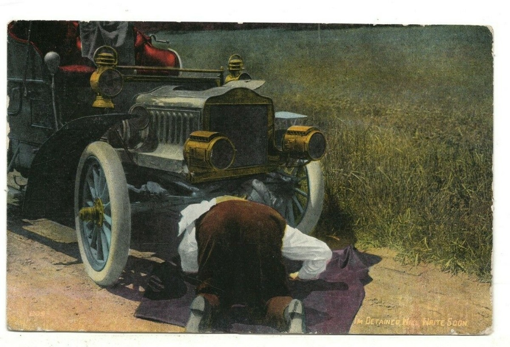

Poems
The Traveler's Gift

There is a picture of my father, young, fixing a German couple’s car. Bent over the engine, hood up, he looks back at the camera. Sleeves rolled. Easy smile. The couple flank him, facing forward: tall, blond, good-toothed smiles, flowing shirts, the seventies. This was roadside, the entrance to my village in Northern Spain. What made the photo unusual, I thought, was them: two German hippies far off the map. But now I know, that wasn’t it. All his pictures from that time were small, grainy black-and-whites. Who stood behind the camera? Who took, then mailed this large, glorious print— the one where you can see him as he was: not a faded, grainy shadow, but a luminous helping soul.
Dolo Diaz is a scientist / poet with roots in Spain, currently residing in California. Her work has appeared or is forthcoming in ONE ART, The Summerset Review, Sky Island Journal, The Indianapolis Review, 2River View, among others, and has been nominated for Best of the Net. Website: dolodiaz.com.